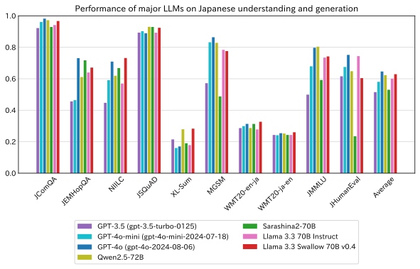
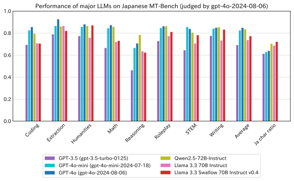

- 2025-03-10: Released Llama 3.3 Swallow 70B Instruct v0.4 (Versions v0.1 to v0.3 were skipped).
- Llama 3.3 Swallow 70B Instruct v0.4: https://huggingface.co/tokyotech-llm/Llama-3.3-Swallow-70B-Instruct-v0.4
- Llama 3.3 Swallow 70B v0.4: https://huggingface.co/tokyotech-llm/Llama-3.3-Swallow-70B-v0.4
The license for Llama 3.3 Swallow inherits from the Meta Llama 3.3 license. It can be used for research, commercial purposes, and more, as long as it complies with the Llama 3.3 license and does not violate the usage restrictions of the Gemma Terms of Use.
In the Swallow project, we are conducting research and development to create a highly versatile large language model with strong Japanese capabilities. Instead of selecting evaluation tasks each time we release a model, we conduct evaluations using predefined benchmarks. Specifically, we assess the model using a variety of tasks, including question-answering tasks that test common knowledge, automatic summarization and machine translation to measure language generation abilities, general knowledge exam questions, and tasks such as mathematics and code generation that reflect logical reasoning skills. For these evaluations, we use 10 datasets for Japanese language understanding and generation tasks, and 10 datasets for English language understanding and generation tasks. In this iteration, we have newly added the MATH benchmark. Additionally, to evaluate Japanese dialogue capabilities, we conduct assessments using the Japanese MT-Bench, with GPT-4 acting as the judge (specifically, GPT-4o-2024-08-06 is used as the judge).
Furthermore, in our exploration of methodologies for constructing large language models with high language understanding, generation, and dialogue capabilities, we not only evaluate prototype models developed by our research team but also conduct evaluation experiments on large language models developed by other organizations. In the fiscal year 2024 alone, we have conducted over 600 such experiments.
The evaluation results conducted by the Swallow team are publicly available as the Swallow LLM Leaderboard.
70B Base model
How well does the open LLM, Llama 3.3 Swallow 70B v0.4, perform? We compared the performance of Llama 3.3 Swallow 70B v0.4 with several other models, including OpenAI’s widely used LLMs, GPT-4o (gpt-4o-2024-08-06), GPT-4o-mini (gpt-4o-mini-2024-07-18), and GPT-3.5 (gpt-3.5-turbo-0125), as well as other open LLMs known for their strong Japanese performance, such as Qwen2.5-72B. We also compared it to Sarashina2-70B, a high-performing domestic model developed from scratch, and Llama 3.3 70B Instruct, the base model used for continual pretraining.

The average score for Japanese understanding and generation tasks for Llama 3.3 Swallow 70B v0.4 was 0.629, ranking second among the compared models, just behind GPT-4o’s 0.646. The third-place model, Qwen2.5-72B, scored 0.623, only 0.6 points behind Swallow, indicating that Llama 3.3 Swallow 70B v0.4 performs almost on par with Qwen2.5-72B and is approaching GPT-4o in capability.
Compared to Llama 3.3 70B Instruct’s 0.601, Swallow’s score improved by 2.8 points in Japanese understanding and generation tasks. A more detailed breakdown of task-specific scores shows that 8 out of 10 tasks improved, with the exception of MGSM and JHumanEval. Significant improvements were observed in:
- NIILC (Japanese Q&A): 0.570 to 0.732 (+16.2 points)
- XL-Sum (automatic summarization): 0.179 to 0.283 (+10.4 points)
- WMT20 (en-ja) (machine translation): 0.278 to 0.327 (+4.9 points)
These results indicate that continual pretraining has enhanced Swallow’s knowledge of Japan and its ability to generate Japanese text.
While the score drop in MGSM (arithmetic reasoning) was minimal (only 0.8 points), JHumanEval (code generation) saw a 14.0-point decline. This drop was initially much larger — over 20 points — when extracting high-quality examples from The Stack v2 for training. However, we mitigated this decline by refactoring the training data using an LLM, demonstrating that maintaining a model’s original strengths requires high-quality training data rather than just a strong base model.
The newly released Llama 3.3 Swallow 70B v0.4 achieved the highest performance among the compared models in the following benchmarks: NIILC (Japanese Q&A), XL-Sum (automatic summarization), and WMT20 (machine translation, both English-to-Japanese and Japanese-to-English). While there are still noticeable differences in perceived performance between Llama 3.3 Swallow 70B v0.4 and GPT-4o, Swallow is now at a level where it can be considered a viable alternative in tasks that prioritize Japanese capabilities.
We also attempted to evaluate and compare the performance of recently hyped “deep thinking” models like OpenAI o1 and DeepSeek-R1. However, we ultimately excluded them from our results.
- OpenAI o1 was not evaluated due to its high API costs, making it difficult to assess during a budget-constrained fiscal year-end.
- DeepSeek-R1-based models, which have been distilled into Llama and Qwen, were tested but produced unexpectedly low scores under Swallow’s evaluation method. Since DeepSeek-R1 is designed for zero-shot inference, but Swallow’s benchmarks use few-shot inference, some tasks saw score drops of up to 30 points. To avoid misinterpretation of its abilities, we decided not to publish these results.
In the interest of fairness, we aim to maintain a consistent evaluation method rather than adjusting it for specific models. The evaluation of DeepSeek-R1 models remains a future work.
70B Instruct model
Next, we measured the dialogue performance of the instruction-tuned model, Llama 3.3 Swallow 70B Instruct v0.4, using the Japanese MT-Bench (with GPT-4o-2024-08-06 as the judge).
For comparison, we evaluated GPT-4o (gpt-4o-2024-08-06), GPT-4o-mini (gpt-4o-mini-2024-07-18), GPT-3.5 (gpt-3.5-turbo-0125), Qwen2.5-72B-Instruct, and Llama 3.3 70B Instruct, the base model used for continual pretraining. (Sarashina2-70B was excluded since there is no instruction-tuned variant available.)

The average score of Llama 3.3 Swallow 70B Instruct v0.4 on Japanese MT-Bench was 0.772, falling short of GPT-4o’s 0.848 and Qwen2.5-72B-Instruct’s 0.835. (These scores are often multiplied by 10 to represent the MT-Bench score on a 10-point scale.) Swallow performed well in tasks related to humanities, writing, and Japanese language knowledge, but lagged behind in coding, mathematics, and reasoning tasks, suggesting areas for improvement. The instruction tuning data for Llama 3.3 Swallow 70B Instruct v0.4 was based on imitation learning from Gemma 2 27B IT, which scored 0.768 on Japanese MT-Bench. This indicates that Swallow has successfully inherited the dialogue capabilities of its source LLM.
One issue with some foreign-made LLMs is that they tend to respond in English even when prompted in Japanese. To address this, we instructed GPT-4o (as the judge) to penalize non-Japanese responses, but in some cases, it still awarded high scores to English responses despite this instruction. To better analyze this, the Swallow development team examined the proportion of Japanese characters in model responses when evaluating Japanese MT-Bench. Since some tasks, like coding, naturally include non-Japanese text, we consider a 70% ratio of Japanese characters to be appropriate. GPT-series models had a Japanese character ratio of around 62%. In contrast, Llama 3.3 Swallow 70B Instruct v0.4 reached about 72%, showing that it was properly tuned to respond in Japanese. This suggests that Llama 3.3 Swallow 70B Instruct v0.4 has been effectively fine-tuned to prioritize Japanese responses.
Llama 3.3 Swallow is constructed using the following steps:
- Llama 3.3 Swallow Base: Continual pretraining (Fujii et al., 2024) of Llama 3.3 70B Instruct (without vocabulary expansion).
- Llama 3.3 Swallow Instruct: Supervised fine-tuning (SFT) of the Llama 3.3 Swallow Base model.
The following corpora were used for continual pretraining:
- Cosmopedia
- Dclm-baseline-1.0 (Li et al., 2024)
- FineMath-4+ (Allal et al., 2025)
- English Wikipedia
- Japanese Wikipedia
- Laboro ParaCorpus
- Educationally valuable texts selected from Swallow Corpus Version 2
- Top 10% selected using a Wikipedia-based classifier from the Swallow Education Classifier
- Top 10% selected using an LLM-based classifier from the Swallow Education Classifier
- Japanese synthetic QA text generated from educationally valuable texts
- The Stack v2 (Lozhkov et al., 2024) with quality filtering and LLM-based refactoring.
Swallow Corpus Version 2
For the continual pretraining of Llama 3.1 Swallow, a Japanese web corpus (Swallow Corpus Version 2) was independently extracted and refined from the full archives distributed by Common Crawl. These archives contain 94 snapshots collected from 2013 to 2023, covering approximately 25.47 billion pages (Okazaki et al., 2024). In Swallow Corpus Version 2, we downloaded all 25.47 billion pages from Common Crawl and extracted around 8.3 billion pages (approximately 12 trillion Japanese characters) identified as Japanese text. The proportion of Japanese web pages within the entire Common Crawl dataset was 3.2%. After deduplication, the final Japanese web corpus consisted of 1.9 billion pages (approximately 3.2 trillion characters).
Selection of Educationally Valuable Texts
Building upon the success of Llama 3.1 Swallow, we carefully selected educational web documents from Swallow Corpus Version 2 to use as training data (Hattori et al., 2025). For this selection, we applied two classifiers from the Swallow Education Classifier: Wikipedia-based classifier (assesses educational value based on Japanese Wikipedia); and LLM-based classifier (assesses educational value through automatic annotation by Llama 3.1). Only documents ranked in the top 10% for educational value by either classifier were included in the training data. For additional Japanese text sources, we incorporated Japanese Wikipedia and the Laboro ParaCorpus.
QA-Style Japanese Synthetic Text
To further enhance the learning effect of educationally valuable texts, Llama 3.3 Swallow 70B v0.4 incorporated QA-style synthetic text, which was created by rephrasing educational texts into a question-answer format using Gemma 2 27B IT. This synthetic text was used in continual pretraining. Compared to Llama 3.1 Swallow 70B v0.1, Llama 3.3 Swallow 70B v0.4 showed improved scores in knowledge-based tasks such as NIILC (0.678 → 0.732) and JMMLU (0.709 → 0.742). Although differences in corpus composition, base LLM before continual pretraining, and number of training tokens prevent a strict comparison, the results of the ablation study described below suggest that QA-style synthetic text contributed to performance improvements.
Ablation Study
Prior to continual pretraining, we conducted an ablation study to verify the effectiveness of QA-style synthetic text. We trained models using four different datasets for continual pretraining and compared their performance:
- Swallow Corpus Version 2
- Top 10% of educationally valuable texts, selected by an LLM-based classifier
- QA-style synthetic text generated using educationally valuable texts as a seed
- Combination of (2) and (3)
The base model for continual pretraining was Llama 3 8B (instead of Llama 3.1, to reuse past experimental results). The total number of training tokens was 50 billion (50B), composed of 48.31B tokens from the experimental dataset and 1.69B tokens from Japanese Wikipedia. Using QA-style synthetic text led to substantial improvements across various tasks, including: Question answering (JEMHopQA, NIILC); General knowledge tasks (JMMLU, pfgen-bench (Imajo et al., 2025)); Machine reading comprehension (JSQuAD); and Arithmetic reasoning (MGSM). Additionally, combining QA-style synthetic text with its seed educationally valuable texts improved commonsense knowledge QA (JComQA) while preventing performance degradation in machine translation (WMT20), demonstrating high effectiveness.
| Experiment | JComQA | JEMHopQA | NIILC | JSQuAD | XL-Sum | MGSM | WMT-20 (en-ja) | WMT-20 (ja-en) | JMMLU | JHumanEval | pfgen-bench |
|---|---|---|---|---|---|---|---|---|---|---|---|
| Llama 3 8B (base LLM) | 83.6 | 44.5 | 40.0 | 88.8 | 17.6 | 33.2 | 22.0 | 20.9 | 45.6 | 33.1 | 40.3 |
| 1) Swallow Corpus Version 2 | 87.5 | 46.3 | 56.3 | 88.8 | 21.2 | 32.8 | 27.0 | 20.1 | 46.9 | 23.9 | 60.9 |
| 2) Top-10% of LLM-based classifier | 88.6 | 49.5 | 59.9 | 89.8 | 19.3 | 33.6 | 28.3 | 20.9 | 50.2 | 24.8 | 66.5 |
| 3) QA-style synthetic text | 86.9 | 52.5 | 63.5 | 90.6 | 18.8 | 40.4 | 26.3 | 19.0 | 55.3 | 27.6 | 70.8 |
| 4) Top-10% of LLM-based classifier & QA-style synthetic text | 92.3 | 53.8 | 65.3 | 91.0 | 19.1 | 41.6 | 28.5 | 21.0 | 55.9 | 25.4 | 71.1 |
Removal of Repetitive Sequences in Synthetic Text
During the ablation study with the 8B model, continual pretraining proceeded smoothly when using synthetic text. However, when applied to continual pretraining of the 70B model, frequent loss spikes were observed, making training unstable.
A manual inspection of the synthetic text revealed that a small number of documents (a few per 100,000) contained repeated sequences, such as \\_\\_\\_....
After removing these documents using n-gram-based filtering, the loss spikes disappeared. While this alone does not confirm that repetition was the cause of the loss spikes, prior research (OLMo Team, 2025) suggests that repetition can contribute to instability.
This highlights the importance of quality control and filtering when constructing synthetic text. Just as quality filters are applied to web-scraped text, we must assume that LLM-generated text is not inherently flawless and apply appropriate refinements.
English, Math, and Source Code Texts
Building on the effectiveness confirmed in Llama 3 Swallow and Llama 3.1 Swallow, we incorporated:
- Dclm-baseline-1.0: A high-quality English web text dataset
- Cosmopedia: A textbook-style synthetic dataset generated using an LLM
- FineMath-4+ (Allal et al., 2025): A mathematics dataset extracted from Common Crawl, focusing on deductive reasoning and logical inference.
Regarding the source code corpus, we first followed the approach of Llama 3.1 Swallow v0.2 and applied a quality filter to the Python subset of The Stack v2. Specifically, we removed any code containing syntax errors or receiving a Pylint score below 7. The resulting corpus is distributed as tokyotech-llm/swallow-code-v0.1.
Next, inspired by software enginerring methodologies for improving software quality (particularly readability), we used Llama 3.3 70B Instruct to refactor the code in line with the Google Python Style Guide and general coding best practices. In experiments with Llama 3.1 8B, we confirmed that training on this refactored code improved scores on JHumanEval and HumanEval by 5 and 9 points, respectively.
Enhancing Conversational Ability with Synthetic Data
The key to improving the conversational ability of large language models lies in instruction tuning with training data that consists of diverse and complex instructions paired with useful and fluent responses. Ideally, this would involve collecting real user queries directed at large language models and manually curating appropriate responses. However, this approach requires enormous time and effort. To construct training data quickly and cost-effectively, the research team adopted a response imitation approach (Ma et al., 2025), leveraging the outputs of existing high-performance large language models. Specifically, we translated the instruction texts from the LMSYS-Chat-1M dataset, which records human interactions with large language models, into Japanese. We then used top-tier open models for conversational ability (either Llama-3.1-405B-Instruct or Gemma-2-27B-IT) to automatically generate response texts. Following the methodology used for Llama 3.1, we further generated multiple response candidates and automatically scored them using the model to select the best response. Additionally, we improved data quality by detecting and removing duplicate, templated, or mechanically generated instructions, as well as redundant responses.
The instruction-tuning data (hereafter, SFT data) for Llama 3.3 Swallow v0.4 consists of SFT data for Japanese dialogue and code generation tasks. No English dialogue SFT data was used. The Japanese dialogue SFT data is identical to that used for Llama 3.1 Swallow v0.3 and consists of the following:
- Gemma-2-LMSYS-Chat-1M-Synth: A Japanese multi-turn instruction-response dataset synthesized from lmsys-chat-1m (Zhang et al., 2024).
- First-turn instruction texts were translated into Japanese using DeepL and then fed into Gemma 2 27B IT to generate assistant responses. Response selection was performed using rejection sampling (n=6) with automatic scoring by Gemma 2 27B IT.
- Second-turn instruction and response texts were also generated using Gemma 2 27B IT. Additionally, second-turn responses were automatically scored, and any responses scoring below 9 out of 10 (along with their corresponding instructions) were discarded.
- Conversations containing personally identifiable information (PII), templated instructions, or duplicated instructions were removed.
- Swallow-Magpie-Ultra-v0.1: Identical to the
filtered-magpie-ultra-jadataset used in Llama 3.1 Swallow v0.1 and v0.2. This dataset is derived from magpie-ultra-v0.1, which was constructed using MAGPIE (Xu et al., 2025) and Llama-3.1-405B-Instruct. Only instruction-response pairs rated “average” or higher were translated into Japanese using Gemma 2 27B IT. - Swallow-Gemma-Magpie-v0.1: A dataset based on
gemma-magpie, previously used in Llama 3.1 Swallow v0.1 and v0.2. Responses were automatically scored using Gemma 2 27B IT, and any responses scoring below 7 out of 10, along with their corresponding instructions, were removed.
Improving Coding Capabilities with SFT
In Llama 3.3 Swallow 70B Instruct v0.4, we tackled the challenge of enhancing coding capabilities through supervised fine-tuning by adding SFT data for code generation task and adopting a two-stage SFT approach.
For the code generation SFT data, we synthesized 1 million instruction-response pairs using Llama 3.3 70B Instruct as the base model. The SFT data for code generation tasks was obtained by converting the Swallow Code v0.3 source code corpus—used for continued pretraining—into instruction-and-response pairs using Llama 3.3 70B Instruct.
Experiments with the 8B model showed that training code generation SFT data together with Japanese dialogue SFT data reduced the effectiveness of the code generation SFT data. To address this issue, we adopted a two-stage SFT approach:
- Stage 1: Train the model using only code generation SFT data.
- Stage 2: Train the model with a mix of code generation SFT data and Japanese dialogue SFT data.
As a result, compared to the base model, the instruction-tuned model achieved significant improvements in code generation tasks: HumanEval score improved from 0.709 → 0.750; and JHumanEval score improved from 0.604 → 0.700.
Distributed Parallel Training with Amazon SageMaker HyperPod
As of October 2024, the operational timeline of ABCI 3.0 was uncertain. Therefore, for this round of continual pretraining, we utilized Amazon Web Services (AWS) SageMaker HyperPod (H100 × 32 nodes) for model training. On SageMaker HyperPod, we used the Elastic Fabric Adapter (EFA) network interface. However, we observed that PyTorch’s unmanaged memory usage increased when using EFA compared to InfiniBand environments (e.g., Institute of Science Tokyo’s TSUBAME 4.0). This unexpected memory overhead caused out-of-memory (OOM) errors, requiring adjustments to the distributed training setup.
To further accelerate training, we optimized communication and computation overlap. Previously, we had overlapped data parallel (DP) communication with training computation. This time, we also overlapped tensor parallel (TP) communication with training computation. By reducing the waiting time required for communication to complete before computation could proceed, we significantly improved training speed.
For distributed storage, we used Amazon FSx for Lustre to prevent storage bottlenecks during training. Additionally, to reduce the time required for saving model checkpoints, we utilized PyTorch Distributed Checkpoint (DCP) and Asynchronous Saving with DCP. These optimizations reduced checkpoint saving time to less than one-tenth compared to Llama 3.1 Swallow 70B v0.1, further accelerating the overall training process.
For more details about the training environment, please refer to our blog post. We would also like to extend our gratitude to Saori Yagyu, Kei Sasaki, Keita Watanabe, Daisuke Miyamoto, and Masaru Isaka from AWS for their invaluable support during this project.
References
- Loubna Ben Allal, Anton Lozhkov, Elie Bakouch, Gabriel Martín Blázquez, Guilherme Penedo, Lewis Tunstall, Andrés Marafioti, Hynek Kydlíček, Agustín Piqueres Lajarín, Vaibhav Srivastav, Joshua Lochner, Caleb Fahlgren, Xuan-Son Nguyen, Clémentine Fourrier, Ben Burtenshaw, Hugo Larcher, Haojun Zhao, Cyril Zakka, Mathieu Morlon, Colin Raffel, Leandro von Werra and Thomas Wolf. 2025. SmolLM2: When Smol Goes Big – Data-Centric Training of a Small Language Model. arXiv:2502.02737.
- Kazuki Fujii, Taishi Nakamura, Mengsay Loem, Hiroki Iida, Masanari Ohi, Kakeru Hattori, Hirai Shota, Sakae Mizuki, Rio Yokota, and Naoaki Okazaki. Continual Pre-Training for Cross-Lingual LLM Adaptation: Enhancing Japanese Language Capabilities. In Proceedings of the First Conference on Language Modeling (COLM), October 2024.
- Jeffrey Li, Alex Fang, Georgios Smyrnis, Maor Ivgi, Matt Jordan, Samir Yitzhak Gadre, Hritik Bansal, Etash Kumar Guha, Sedrick Keh, Kushal Arora, Saurabh Garg, Rui Xin, Niklas Muennighoff, Reinhard Heckel, Jean Mercat, Mayee Chen, Suchin Gururangan, Mitchell Wortsman, Alon Albalak, Yonatan Bitton, Marianna Nezhurina, Amro Abbas, Cheng-Yu Hsieh, Dhruba Ghosh, Josh Gardner, Maciej Kilian, Hanlin Zhang, Rulin Shao, Sarah M. Pratt, Sunny Sanyal, Gabriel Ilharco, Giannis Daras, Kalyani Marathe, Aaron Gokaslan, Jieyu Zhang, Khyathi Raghavi Chandu, Thao Nguyen, Igor Vasiljevic, Sham M. Kakade, Shuran Song, Sujay Sanghavi, Fartash Faghri, Sewoong Oh, Luke Zettlemoyer, Kyle Lo, Alaaeldin El-Nouby, Hadi Pouransari, Alexander Toshev, Stephanie Wang, Dirk Groeneveld, Luca Soldaini, Pang Wei Koh, Jenia Jitsev, Thomas Kollar, Alexandros G. Dimakis, Yair Carmon, Achal Dave, Ludwig Schmidt and Vaishaal Shankar. 2024. DataComp-LM: In search of the next generation of training sets for language models. arXiv:2406.11794.
- Naoaki Okazaki, Kakeru Hattori, Hirai Shota, Hiroki Iida, Masanari Ohi, Kazuki Fujii, Taishi Nakamura, Mengsay Loem, Rio Yokota, and Sakae Mizuki. Building a Large Japanese Web Corpus for Large Language Models. In Proceedings of the First Conference on Language Modeling (COLM), October 2024.
- Team OLMo, Pete Walsh, Luca Soldaini, Dirk Groeneveld, Kyle Lo, Shane Arora, Akshita Bhagia, Yuling Gu, Shengyi Huang, Matt Jordan, Nathan Lambert, Dustin Schwenk, Oyvind Tafjord, Taira Anderson, David Atkinson, Faeze Brahman, Christopher Clark, Pradeep Dasigi, Nouha Dziri, Michal Guerquin, Hamish Ivison, Pang Wei Koh, Jiacheng Liu, Saumya Malik, William Merrill, Lester James V. Miranda, Jacob Morrison, Tyler Murray, Crystal Nam, Valentina Pyatkin, Aman Rangapur, Michael Schmitz, Sam Skjonsberg, David Wadden, Christopher Wilhelm, Michael Wilson, Luke Zettlemoyer, Ali Farhadi, Noah A. Smith and Hannaneh Hajishirzi. 2025. 2 OLMo 2 Furious. arXiv:2501.00656.
- 今城 健太郎, 平野 正徳, 鈴木 脩司, 三上 裕明. pfgen-bench: 日本語事前学習モデルのための文章生成性能評価ベンチマーク. 言語処理学会第31回年次大会 (NLP2025), A2-3, pp. 443–447, 2025年3月.
- 服部 翔, 岡崎 直観, 水木 栄, 藤井 一喜, 中村 泰士, 大井 聖也, 塩谷 泰平, 齋藤 幸史郎, Youmi Ma, 前田 航希, 岡本 拓己, 石田 茂樹, 横田 理央, 高村 大也. Swallowコーパスv2: 教育的な日本語ウェブコーパスの構築. 言語処理学会第31回年次大会 (NLP2025), C1-5, pp. 94–99, 2025年3月.
- Youmi Ma, 水木 栄, 藤井 一喜, 中村 泰士, 大井 聖也, 島田 比奈理, 塩谷 泰平, 齋藤 幸史郎, 前田 航希, 服部 翔, 岡本 拓己, 石田 茂樹, 横田 理央, 高村 大也, 岡崎 直観. 模倣学習による大規模言語モデルの指示チューニング. 言語処理学会第31回年次大会 (NLP2025), Q8-21, pp. 3446–3451, 2025年3月.
The research and development of the large language model Swallow has been supported by the AIST Project “Research and Development on Generative AI Foundation Models in the Physical Domain,” the “Core Integrated Technology Development for Next-Generation Artificial Intelligence and Robotics” project by the New Energy and Industrial Technology Development Organization (NEDO) (JPNP18002), specifically focusing on “Development of AI Application Technology for Decision Support in Design Risk Assessment Based on Expert Perspectives.” It is also supported by a project from the Ministry of Education, Culture, Sports, Science, and Technology (MEXT) aimed at “establishment of research and development centers to ensure the transparency and reliability of generative AI models”, along with other contributions.